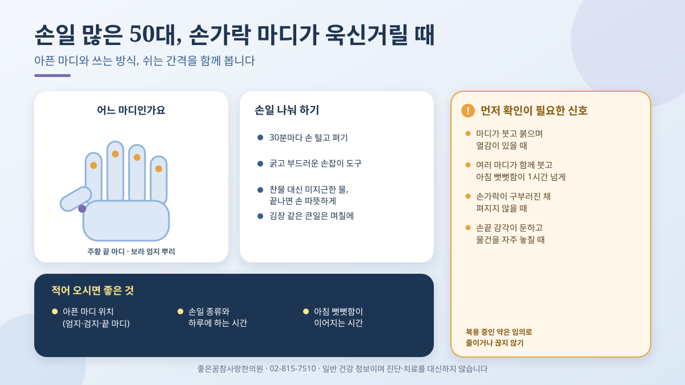

이종호 한의사 감수좋은꿈참사랑한의원 대표원장 (한의사 면허번호 19769)발행 2026-11-23 · 수정 2026-11-25
이 글의 차례
김장과 요리, 뜨개질과 도자기처럼 손일을 즐기는 분이 많습니다. 손은 쓸수록 유연한 부분도 있지만 같은 동작이 길게 반복되면 마디가 먼저 지칠 수 있어, 아픈 마디와 쓰는 방식을 함께 살펴봅니다.
왜 이런 불편이 생길 수 있나요
- 칼질, 걸레 짜기, 뜨개질처럼 같은 각도로 꽉 쥐는 동작이 반복되면 손가락 마디와 힘줄에 부담이 쌓입니다.
- 50대 전후에는 손가락 끝 마디나 엄지 뿌리 쪽이 뻣뻣해지는 분이 늘어납니다.
- 차가운 물을 오래 쓰면 손이 굳어 같은 일도 더 힘들게 느껴질 수 있습니다.
- 쉬는 간격 없이 몰아서 일하면 다음 날까지 욱신거림이 남기도 합니다.
먼저 이렇게 여쭙니다
- 어떤 손일을 하루에 몇 시간 정도 하시나요?
- 어느 마디가 욱신거리나요? 엄지, 검지, 손목 중 어느 쪽인가요?
- 일을 마친 뒤에 더 아픈가요, 하는 도중에 아픈가요?
- 아침에 손이 뻣뻣한 시간은 얼마나 이어지나요?
- 차가운 물을 쓰는 일이 많으신가요?
일상에서 먼저 해 볼 수 있는 것
- 손일은 한 번에 오래 하지 않고 30분마다 손을 털고 펴 주기
- 손잡이가 굵고 부드러운 도구로 바꿔 손가락 힘을 덜 쓰기
- 차가운 물 대신 미지근한 물을 쓰고 일이 끝나면 손을 따뜻하게 하기
- 손가락을 천천히 펴고 쥐는 동작을 아프지 않은 범위에서 반복하기
- 김장처럼 큰일은 며칠에 나누어 하기
한의원에서 함께 살필 수 있는 경우
- 손일을 하고 나면 마디가 욱신거려 다음 날까지 이어지는 경우 쓰는 방식과 쉬는 간격을 함께 살핍니다.
- 손목과 엄지 쪽까지 뻐근한 경우 팔 전체의 긴장과 자세를 함께 살핍니다.
- 날씨가 추워지면 마디가 시린 경우 활동과 생활 습관을 함께 살핍니다.
좋은꿈참사랑한의원에서는 아픈 마디를 직접 눌러 보고 쥐었다 펴는 동작을 확인하며, 손목과 팔, 어깨까지 이어진 긴장을 함께 봅니다. 필요하다고 판단될 때 침이나 약침 등을 정하고, 귀가 전에는 손일을 나눠 하는 요령과 도구를 바꾸는 방법을 알려 드립니다.
얼마나 지켜보고 언제 진료를 받으면 좋을까요
- 큰 손일을 한 다음 날만 욱신거리고 2~3일 쉬면 가라앉는다면, 손일을 나눠 하며 1~2주 지켜볼 수 있습니다.
- 손일을 줄이고 쉬는 간격을 지켰는데도 2주 넘게 같은 마디가 아프다면 진료를 받아 보시길 권합니다.
- 아침 뻣뻣함이 매일 30분 넘게 이어지거나 점점 길어진다면 지켜보기보다 진료 일정을 잡아 보세요.
- 마디가 갑자기 붓고 붉어지며 뜨겁거나, 양손의 여러 손가락이 함께 붓는다면 혈액 검사가 가능한 의료기관 진료를 먼저 받으세요.
- 손가락을 다친 뒤 모양이 변했거나 움직이지 못한다면 영상 검사가 가능한 의료기관을 먼저 찾으세요.
이런 경우를 예로 들 수 있습니다
- 예를 들어 김장철에 사흘 연속 배추를 절이고 양념을 버무린 뒤 엄지 뿌리와 손목이 시큰한 경우, 찬물과 꽉 쥐는 동작이 겹쳤는지, 손목까지 부담이 이어졌는지 함께 살핍니다.
- 예를 들어 뜨개질을 저녁마다 두세 시간씩 하는데 검지 끝 마디가 뻣뻣해진 경우, 바늘을 쥐는 힘과 손목 각도, 쉬는 간격을 직접 재현해 보며 확인합니다.
- 예를 들어 손가락을 굽혔다 펼 때 걸리는 느낌이나 딸깍하는 소리가 함께 있는 경우, 힘줄 주변을 확인할 필요가 있다고 판단되면 초음파로 함께 봅니다.
스스로 점검해 보세요
- 아침에 주먹을 꽉 쥐기 어려운 시간이 있다
- 병뚜껑을 돌리거나 행주를 짤 때 마디가 시큰하다
- 손가락 끝 마디가 예전보다 두툼해 보인다
- 손을 쓰고 난 저녁에 더 욱신거린다
- 찬물에 손을 담그면 마디가 유난히 시리다
- 손가락을 굽혔다 펼 때 걸리는 느낌이 있다
- 양손의 여러 마디가 함께 붓는 날이 있다
마지막 항목에 해당한다면 한의원보다 혈액 검사가 가능한 의료기관 진료를 먼저 권합니다. 나머지 항목은 적어 두었다가 진료 때 보여 주시면 이야기를 정리하기 쉽습니다.
처음 오시면 이렇게 진행됩니다
접수 때 복용 중인 약과 영양제, 다른 병원에서 받은 혈액 검사나 X선 결과가 있다면 함께 보여 주세요. 원장이 어떤 손일을 언제부터 얼마나 하셨는지 여쭙고, 진맥과 함께 아픈 마디를 눌러 보고 쥐었다 펴는 동작, 손목과 팔꿈치, 어깨의 움직임까지 확인합니다. 힘줄 주변을 눈으로 확인할 필요가 있다고 판단되면 초음파를 함께 봅니다.
오늘 할 치료와 이유를 먼저 설명드린 뒤 진행하고, 치료가 끝나면 집에서 해 볼 손 스트레칭과 도구를 바꾸는 요령, 다음 방문 간격을 정합니다. 평소 쓰는 칼이나 뜨개바늘 같은 도구를 사진으로 찍어 오시면 쥐는 방식을 이야기하기 쉽습니다. 진료시간은 평일 09:30~20:00(점심 13:00~14:00), 토·일·공휴일 09:30~15:00입니다.
이렇게 기록해 오시면 상담이 쉬워집니다
- 아픈 마디 위치(엄지, 검지, 손가락 끝 마디 등)
- 손일의 종류와 하루에 하는 시간
- 아침 뻣뻣함이 이어지는 시간
이런 증상은 먼저 확인이 필요합니다
- 마디가 붓고 붉어지며 열감이 있는 경우
- 여러 손가락 마디가 함께 붓고 아침 뻣뻣함이 한 시간 넘게 이어지는 경우
- 손가락이 구부러진 채 펴지지 않는 경우
- 손끝에 감각이 둔해지고 물건을 자주 놓치는 경우
복용 중인 약은 처방한 의사와 상의 없이 줄이거나 끊지 않습니다.
관련 글
- 김장을 하고 난 다음 날 손목과 엄지 쪽이 시큰할 때는 어떻게 살피나요?
- 한파가 오면 무릎과 손가락 관절이 시리고 뻣뻣한 것은 왜 그런가요?
- 손가락을 굽혔다 펼 때 걸리는 느낌이 있으면 초음파로 무엇을 보나요?

여쭙는 것
- 어떤 손일을 하루에 몇 시간 정도 하시나요?
- 어느 마디가 욱신거리나요? 엄지, 검지, 손목 중 어느 쪽인가요?
- 일을 마친 뒤에 더 아픈가요, 하는 도중에 아픈가요?
생활에서 해 볼 것
- 손일은 한 번에 오래 하지 않고 30분마다 손을 털고 펴 주기
- 손잡이가 굵고 부드러운 도구로 바꿔 손가락 힘을 덜 쓰기
- 차가운 물 대신 미지근한 물을 쓰고 일이 끝나면 손을 따뜻하게 하기
한의원에서 함께 살필 것
- 손일을 하고 나면 마디가 욱신거려 다음 날까지 이어지는 경우 쓰는 방식과 쉬는 간격…
- 손목과 엄지 쪽까지 뻐근한 경우 팔 전체의 긴장과 자세를 함께 살핍니다.
- 날씨가 추워지면 마디가 시린 경우 활동과 생활 습관을 함께 살핍니다.
먼저 확인이 필요한 신호
- 마디가 붓고 붉어지며 열감이 있는 경우
- 여러 손가락 마디가 함께 붓고 아침 뻣뻣함이 한 시간 넘게 이어지는 경우
- 손가락이 구부러진 채 펴지지 않는 경우
한눈에 보는 표
| 구분 | 핵심 |
|---|---|
| 여쭙는 것 | 어떤 손일을 하루에 몇 시간 정도 하시나요? 어느 마디가 욱신거리나요? 엄지, 검지, 손목 중 어느 쪽인가요? |
| 생활에서 해 볼 것 | 손일은 한 번에 오래 하지 않고 30분마다 손을 털고 펴 주기 손잡이가 굵고 부드러운 도구로 바꿔 손가락 힘을 덜 쓰기 |
| 한의원에서 함께 살필 것 | 손일을 하고 나면 마디가 욱신거려 다음 날까지 이어지는 경우 쓰는 방식과 쉬는 간격을 함께 살핍니다. 손목과 엄지 쪽까지 뻐근한 경우 팔 전체의 긴장과 자세를 함께 살핍니다. |
| 먼저 확인이 필요한 신호 | 마디가 붓고 붉어지며 열감이 있는 경우 여러 손가락 마디가 함께 붓고 아침 뻣뻣함이 한 시간 넘게 이어지는 경우 |
자주 묻는 질문
손일을 줄여야 하나요?
좋아하는 일을 줄이기보다 쉬는 간격과 도구를 조정하는 것이 현실적입니다. 아픈 정도가 심하면 상담해 보시길 권합니다.
손가락을 꺾어 소리를 내는 습관은 괜찮나요?
반복하면 마디에 부담이 될 수 있어 되도록 줄이는 편이 좋습니다.
여러 마디가 함께 부으면 어떻게 하나요?
염증성 관절 질환을 확인해야 할 수 있어 혈액 검사 등이 가능한 의료기관 진료를 먼저 권합니다.
좋은꿈참사랑한의원은 재진 때 지난번 이야기부터 이어서 여쭙니다. 진료시간과 예약은 오시는 길에서 확인하세요.
어디서 상담받을 수 있나요?
좋은꿈참사랑한의원은 서울 동작구 만양로2길 2 신성빌딩 3층·5층(서울 동작구 상도동, 7호선 상도역 3번 출구 근처)에 있습니다. 한의사 3명(이종호 대표원장, 조영기 수석진료원장, 정원영 진료원장)이 진료합니다. 진료시간은 평일 09:30~20:00(점심 13:00~14:00), 토·일·공휴일 09:30~15:00이며, 방문 전 전화로 확인을 권합니다. 예약은 네이버 예약, 카카오톡 상담, 전화 02-815-7510로 받습니다.
이 글은 일반적인 건강 정보이며 개인의 진단이나 치료를 대신하지 않습니다. 증상이 있거나 복용 중인 약이 있다면 진료를 통해 확인하세요. 치료 효과는 개인마다 다를 수 있습니다.
작성 기준: 일반적으로 알려져 있는 건강 정보를 참고해 정리했습니다(대표원장 감수). 증상 기록은 1~2주 동안 하루 1회, 비슷한 시간에 적어 오시면 지난 상태와 비교하기 쉽습니다.